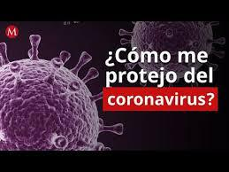
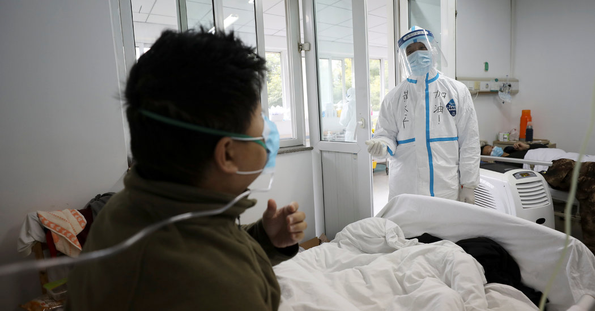

 Protéjase a sí mismo y a los demás contra la COVID-19: Si la COVID-19 se propaga en su comunidad, manténgase seguro mediante la adopción de algunas sencillas medidas de precaución, por ejemplo, mantener el distanciamiento físico, llevar mascarilla, ventilar bien las habitaciones, evitar las aglomeraciones, lavarse las manos y, al toser, cubrirse la boca y la nariz con el codo flexionado o con un pañuelo. Consulte las recomendaciones locales del lugar en el que vive y trabaja. ¡Hágalo!. ¿Qué hacer para mantenerse y mantener a los demás a salvo de la COVID-19? Guarde al menos 1 metro de distancia entre usted y otras personas, a fin de reducir su riesgo de infección cuando otros tosen, estornudan o hablan. Mantenga una distancia aún mayor entre usted y otras personas en espacios interiores. Cuanto mayor distancia, mejor. Convierta el uso de la mascarilla en una parte normal de su interacción con otras personas. Indicaciones básicas sobre la manera de ponerse la mascarilla: Lávese las manos antes de ponerse la mascarilla, y también antes y después de quitársela. Asegúrese de que le cubre la nariz, la boca y el mentón.Indicaciones específicas sobre el tipo de mascarilla que se ha de usar, y en qué circunstancias, en función de la magnitud de la circulación del virus en el lugar en que usted vive, el lugar al que se dirige y quién es usted. Utilice una mascarilla de tela, a menos que pertenezca usted a un grupo de riesgo determinado. Esto es especialmente importante cuando no pueda mantener la distancia física, en particular en entornos de aglomeraciones y en interiores poco ventilados. Utilice una mascarilla médica/quirúrgica si: Es mayor de 60 años Tiene enfermedades preexistentes, Se siente mal y/o Está cuidando a un miembro de la familia enfermo. Para los profesionales sanitarios, las mascarillas médicas son equipo de protección personal esencial cuando tratan casos sospechosos, probables o confirmados de COVID-19. Las mascarillas auto filtrantes (entre ellas las FFP2, FFP3, N95, N99) se deberán utilizar en los entornos donde se realizan procedimientos generadores de aerosoles, y se deben adecuar para asegurar el uso de la talla correcta.
 ¿Qué es un coronavirus? Los coronavirus son una extensa familia de virus que pueden causar enfermedades tanto en animales como en humanos. En los humanos, se sabe que varios coronavirus causan infecciones respiratorias que pueden ir desde el resfriado común hasta enfermedades más graves como el síndrome respiratorio de Oriente Medio (MERS) y el síndrome respiratorio agudo severo (SRAS). El coronavirus que se ha descubierto más recientemente causa la enfermedad por coronavirus COVID-19. ¿Qué es la COVID 19? La COVID 19 es la enfermedad infecciosa causada por el coronavirus que se ha descubierto más recientemente. Tanto este nuevo virus como la enfermedad que provoca eran desconocidos antes de que estallara el brote en Wuhan (China) en diciembre de 2019. Actualmente la COVID 19 es una pandemia que afecta a muchos países de todo el mundo. ¿Cuáles son los síntomas de la COVID-19? Los síntomas más habituales de la COVID-19 son la fiebre, la tos seca y el cansancio. Otros síntomas menos frecuentes que afectan a algunos pacientes son los dolores y molestias, la congestión nasal, el dolor de cabeza, la conjuntivitis, el dolor de garganta, la diarrea, la pérdida del gusto o el olfato y las erupciones cutáneas o cambios de color en los dedos de las manos o los pies. Estos síntomas suelen ser leves y comienzan gradualmente. Algunas de las personas infectadas solo presentan síntomas levísimos. La mayoría de las personas (alrededor del 80%) se recuperan de la enfermedad sin necesidad de tratamiento hospitalario. Alrededor de 1 de cada 5 personas que contraen la COVID 19 acaba presentando un cuadro grave y experimenta dificultades para respirar. Las personas mayores y las que padecen afecciones médicas previas como hipertensión arterial, problemas cardiacos o pulmonares, diabetes o cáncer tienen más probabilidades de presentar cuadros graves. Sin embargo, cualquier persona puede contraer la COVID 19 y caer gravemente enferma. Las personas de cualquier edad que tengan fiebre o tos y además respiren con dificultad, sientan dolor u opresión en el pecho o tengan dificultades para hablar o moverse deben solicitar atención médica inmediatamente. Si es posible, se recomienda llamar primero al profesional sanitario o centro médico para que estos remitan al paciente al establecimiento sanitario adecuado.